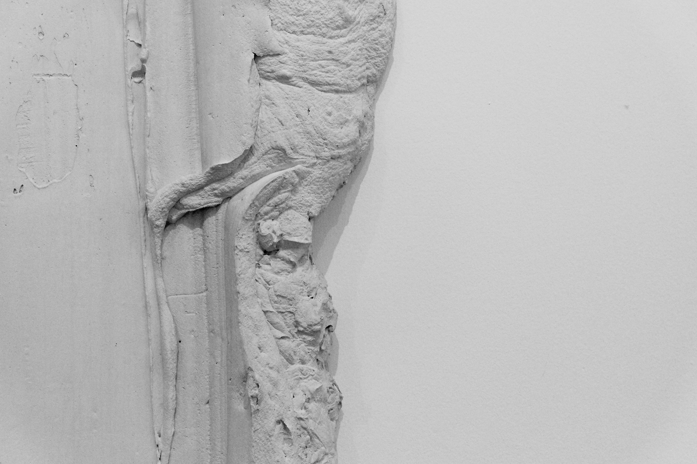

interested in—
light, texture, and the quiet geometry of everyday architecture.
this works began in 2019 as a personal archive of moments suspended between the mundane and the luminous. Each frame is an attempt to hold still what is always moving.